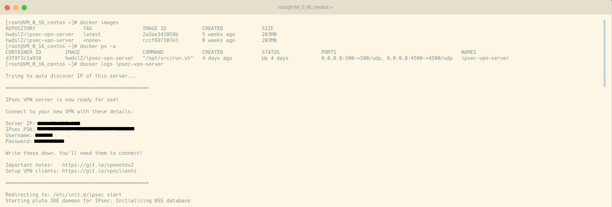
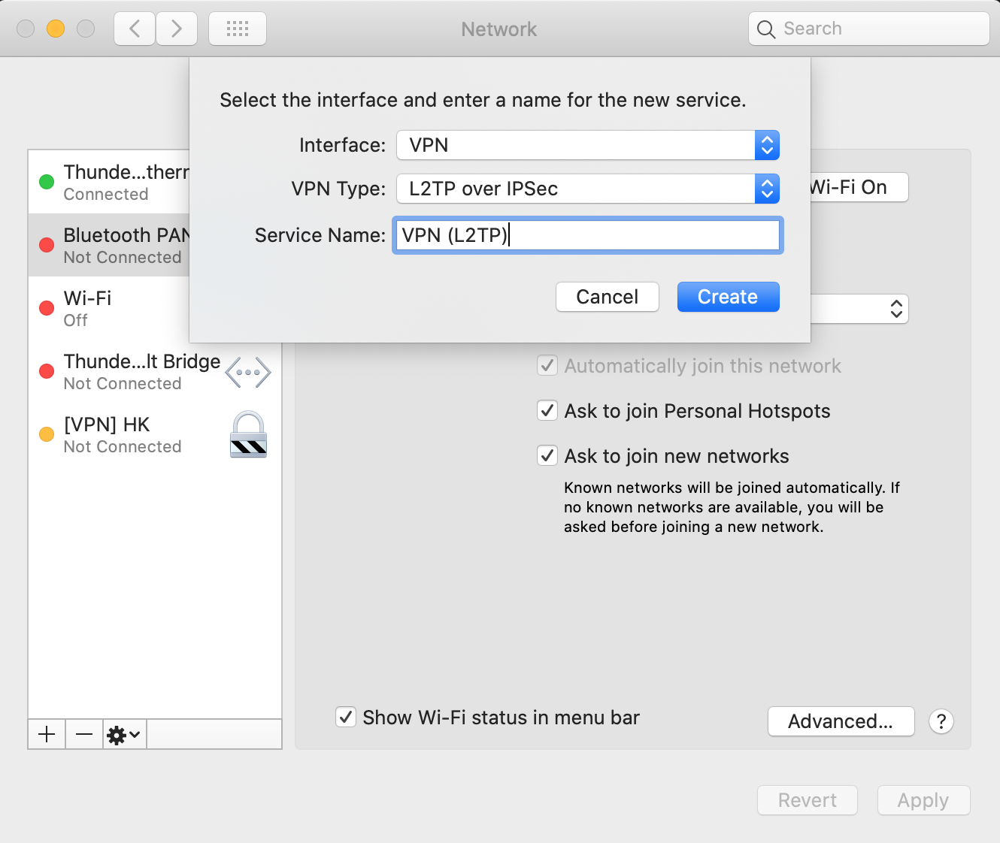
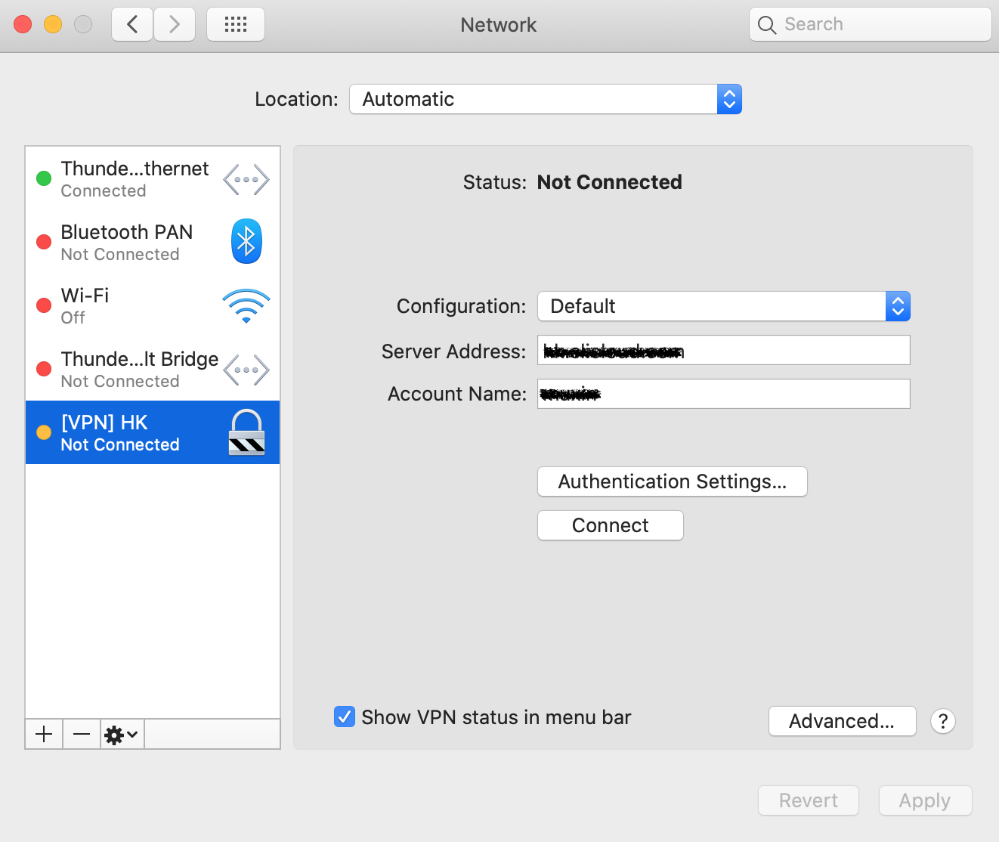
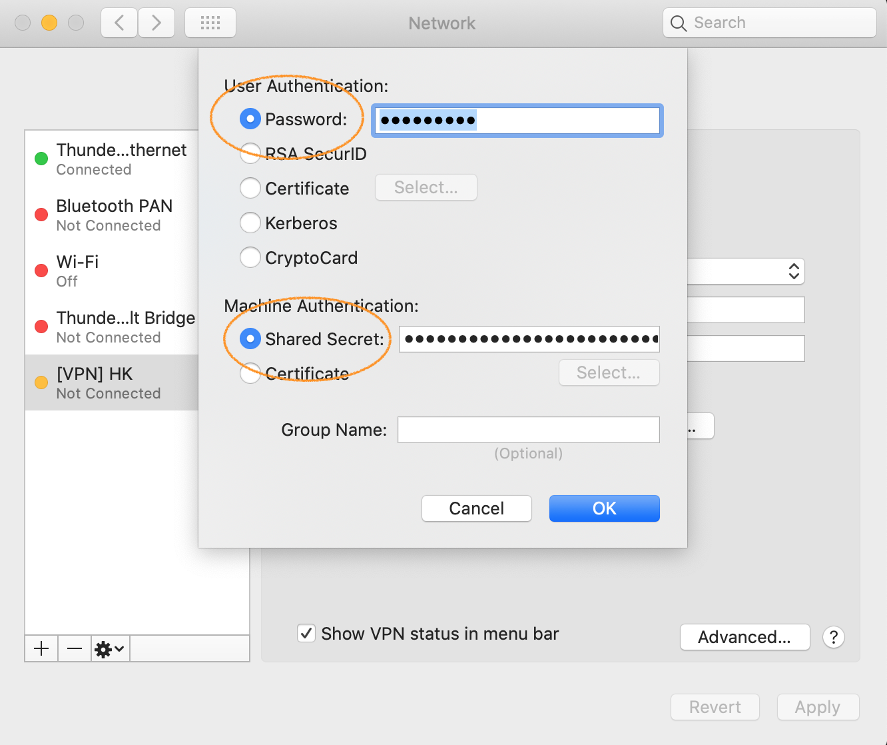
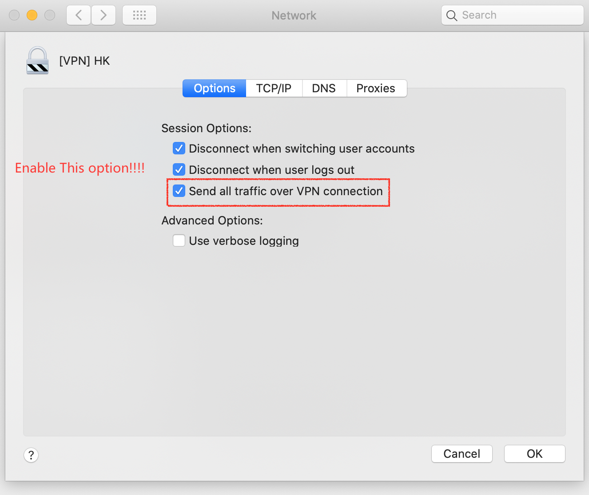
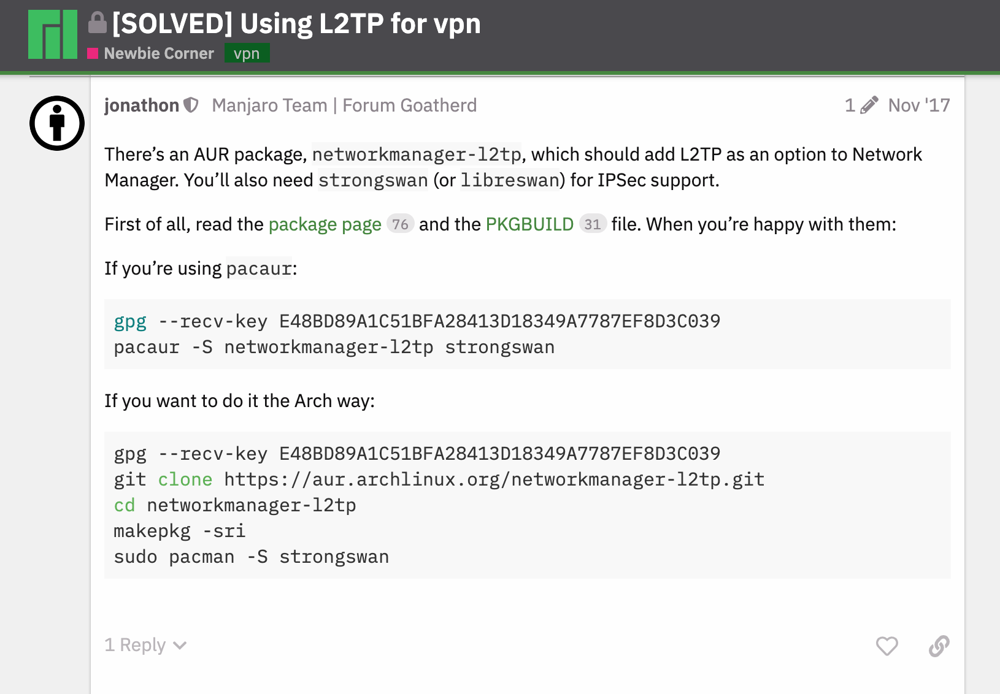

Climb Climb Climb
This guide is a step by step turotial for building a ladder. Hope this guide helpful to you.

Prerequisite
- A foreign
vps serverwhich can visit google.com is enough. Dockerhas been installed on the vps os.
[Server Side] How to build a vpn server
IPsec VPN Server on Docker
Docker image to run an IPsec VPN server, with both IPsec/L2TP and Cisco IPsec.
Pull the latest docker image
1
$ sudo docker pull hwdsl2/ipsec-vpn-server
hwdsl2/ipsec-vpn-server instructions
Environment variables
This Docker image uses the following variables, that can be declared in an env file (example):
1
2
3VPN_IPSEC_PSK=your_ipsec_pre_shared_key
VPN_USER=your_vpn_username
VPN_PASSWORD=your_vpn_passwordStart the IPsec VPN server
Create a new Docker container from this image (replace ./vpn.env with your own env file):
1
2
3
4
5
6
7
8docker run \
--name ipsec-vpn-server \
--env-file ./vpn.env \
--restart=always \
-p 500:500/udp \
-p 4500:4500/udp \
-d --privileged \
hwdsl2/ipsec-vpn-serverRetrieve VPN login details
If you did not specify an env file in the docker run command above, VPN_USER will default to vpnuser and both VPN_IPSEC_PSK and VPN_PASSWORD will be randomly generated. To retrieve them, view the container logs:
1
$ sudo docker logs ipsec-vpn-server
Search for these lines in the output:
1
2
3
4
5
6Connect to your new VPN with these details:
Server IP: your_vpn_server_ip
IPsec PSK: your_ipsec_pre_shared_key
Username: your_vpn_username
Password: your_vpn_passwordCheck server status
To check the status of your IPsec VPN server, you can pass ipsec status to your container like this:
1
$ sudo docker exec -it ipsec-vpn-server ipsec status
Or display current established VPN connections:
1
$ sudo docker exec -it ipsec-vpn-server ipsec whack --trafficstatus
Update Docker image
To update your Docker image and container, follow these steps:
1
$ sudo docker pull hwdsl2/ipsec-vpn-server
Sample

[Client Side] How to connect to the vpn server
On macOS
All things are going to be easy on macOS, because you don’t need to prepare anything, like installing softwares, etc. Let’s enjoy the tour.
Turn on your mac and open network preference. Click the
'+'button on the lower left corner of network manager window. Select ‘VPN’ interface, ‘L2TP over IPSec’ vpn type and name your vpn connection.
VPN server configuration, fill in the blank of vpn server address and your acount name.
Authentication info configuration, fill in your vpn server’s share secret and account’s password.
Ensure all traffic over this vpn connection.

On manjaro Linux
base-devel package group is installed in full, you can use this command to install.
More details.
1 | $ pacman -S --needed base-devel |
1 | $ mkdir -p ~/workspace/arch/ && cd ~/workspace/arch/ |
Reference
- https://aur.archlinux.org/packages/networkmanager-l2tp/
- manjaro l2tp vpn proposal, https://forum.manjaro.org/t/solved-using-l2tp-for-vpn/35133

- https://github.com/hwdsl2/setup-ipsec-vpn/blob/master/docs/clients.md
- https://wiki.archlinux.org/index.php/Arch_User_Repository
- https://github.com/hwdsl2/docker-ipsec-vpn-server